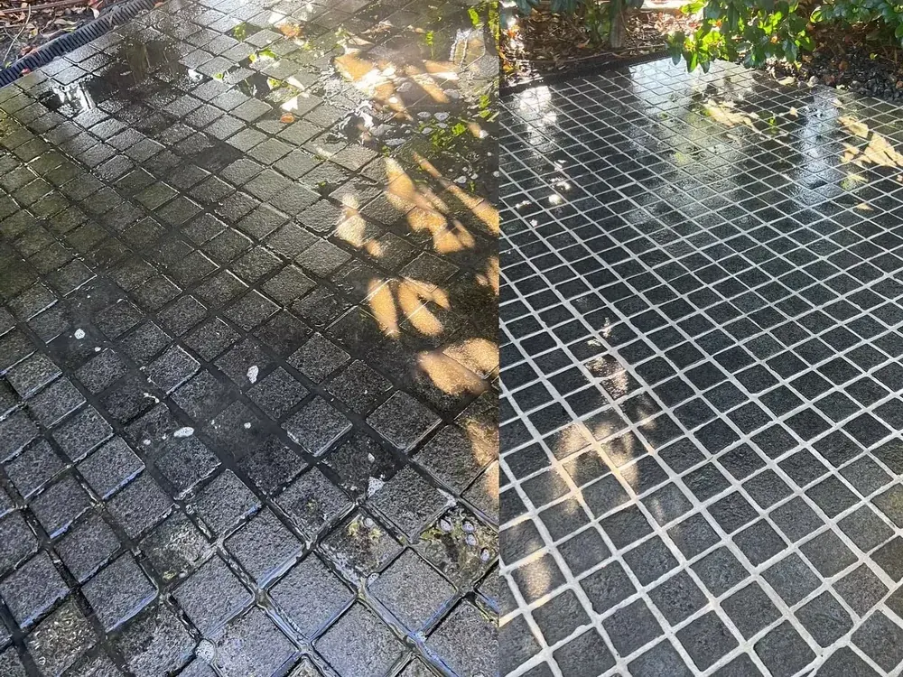
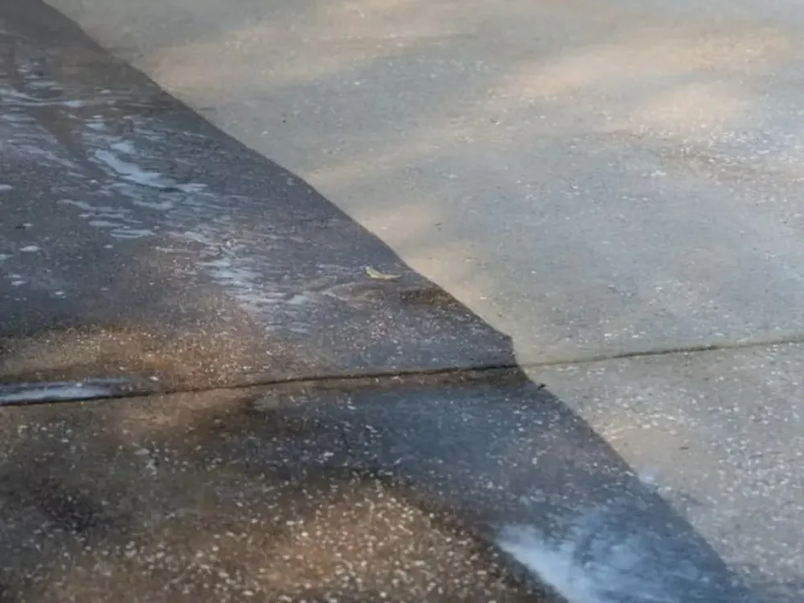

Pressure Washing Melbourne
Pressure Washing Services in Melbourne
Bring tired concrete, pavers and pathways back to life. Our high-pressure cleaning lifts years of grime, moss, oil and algae — often in a single visit.
Hard surfaces around your home take a beating from the weather. Over the years, driveways go grey and grimy, pavers grow slippery with moss and algae, and patios lose the fresh look they had when they were laid. Professional pressure washing strips all of that away, instantly boosting your home's kerb appeal and making outdoor areas safer to walk on.
Stan The Man Cleaning provides powerful, professional pressure washing across Melbourne's Eastern Suburbs. We match the right pressure and technique to each surface, so you get a deep, even clean without damage — whether it's concrete, brick, pavers, stone or timber decking.
What's included
- Driveways, paths and footpaths restored
- Patios, courtyards and pool surrounds cleaned
- Retaining walls, brickwork and fencing refreshed
- Removal of moss, algae, mould, oil stains and grime
- Surface-appropriate pressure to protect your materials
- Tidy clean-up once the job is done
Safer, cleaner outdoor spaces
Slippery, algae-covered paths and driveways aren't just unsightly — they're a genuine trip and slip hazard, especially in Melbourne's wet, cool months. A professional pressure wash removes that build-up, brightens your outdoor areas and helps prevent surfaces from degrading over time. It's one of the fastest, most satisfying transformations you can make to a property, and it pairs perfectly with a window clean or roof soft wash.
Servicing your local area
We regularly work in Donvale, Doncaster, Doncaster East, Templestowe, Warrandyte, Park Orchards, Ringwood, Mitcham, Nunawading, Blackburn, Box Hill, Balwyn, Bulleen and Eltham. If you're anywhere in Melbourne's Eastern Suburbs, we'd love to help.
Real results
See the difference
Drag the slider to reveal a grimy driveway restored with a recent pressure wash in Melbourne's East.
Our process
How we clean your surfaces
Assess the surface
We identify the surface — concrete, pavers, tile or brick — and set the right pressure and technique so we clean without damage.
Pre-treat & wash
We pre-treat stubborn oil, moss and stains, then pressure wash to lift grime and restore the original surface.
Rinse & finish
We rinse edges and borders, clear residue and leave your driveway, path or patio looking like new.
Our work
Recent pressure washing jobs



FAQs
Pressure washing questions
Related services
Complete your exterior clean
Make your driveway look new again
Get a free quote for pressure washing and see the difference a deep clean makes.